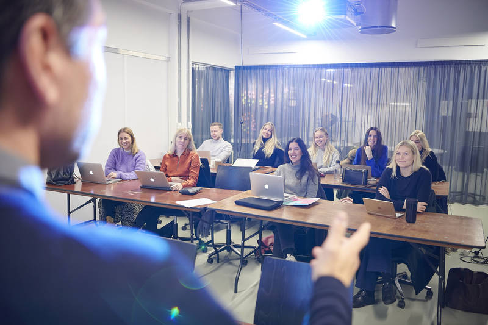

Copenhagen School of Design and Technology (KEA) offers practice-oriented, higher education developed in close cooperation with the business community and educational institutions in Denmark and abroad.


The AP in Computer Science programme teaches you about databases and their structure. You will gain a foundation in information technology, and learn to develop, refine and maintain IT systems. On the programme, you will learn to design and develop programs and apps in collaboration with others, and you will also learn about programming, needs analysis and business understanding.
General programming is taught based on syntax, programming method and program design, from a beginner’s level. You will learn to program in the following languages: Java and Javascript. You can choose other coding languages as electives.
Teaching in this area focuses on systems development theory and method, from pre-analysis to testing systems. Iterative methods, such as Scrum, are primarily taught.
Drawing on organisational theory, you will learn to analyse organisational contexts you can use in systems development and in relation to implementing new systems in organisations.
You will learn about computers down to component level, and up into the cloud, so that you understand the processes running on computers that can affect your systems development process and programming.
Examples of elective subjects include programming mobile devices, web programming, Security and Artificial Intelligence.
A 10-week internship takes place in a relevant business in which you can try out what you have learned in the course of study.
The study programme concludes with a project where you specialise within a given topic. The project follows on from the internship, which often provides the basis for the final project.
On the software development top-up programme you will learn how to develop and manage large distributed data-intensive systems. You will work with all the various aspects of software development, such as databases, contracts, testing, systems integration, project management and systems development.
Database types, database optimisation, administrative tools, transactions, security. In the module you will learn to choose and use the correct database solutions for various tasks. In addition, you will also analyse and work with large databases and tasks, such as redesign and operations optimization.
Test strategies, types, models, verification, validation, contracts. In the module you will learn to plan, carry out tests, and integrate tests in strategies, development processes and quality assurance.
Development of Large Systems
Management techniques, quality systems, distributed development, patterns and frameworks. In the module you will learn how to plan and manage development processes with many project participants. You will also learn how to design and implement large systems that consist of small parts from independent development groups.
Data conversion, migration, standards, SOA - service-oriented architecture. In the module you will learn to integrate existing systems and integrate existing systems in connection with the development of new systems. You also learn to develop new systems that support integration in the future.
In addition to the obligatory part of the programme, there are two elective subjects in which you can specialise in, for example, Project Management.
You enter into a 2 months internship in a business either in Denmark or abroad. Your internship advisor at KEA will help you with any practical questions concerning your internship with a host company which you must find yourself.
For the final examination project you write a report within one of the subjects in the programme.
As a Web Developer, you will learn to manage the entire process of designing and building applications for the web in projects of all sizes. You will work creatively with coding and implementing real projects, while also developing your skills to a professional level.
This module is currently based on HTML, CSS, JAVASCRIPT, and PHP. Depending on the semester students built an application based on the mentioned technology.
The module focuses on learning how to design and develop relational databases and document based databases.
The connection between functionality and design, enabling rich client-side interaction through the use of design techniques and principles.
Selection of technology stacks to meet the requirements of complex web applications and the management of quality processes to ensure high availability and maintainability.
In addition to the mandatory parts of the programme, two subjects are offered each semester from the electives package, which you, depending on the combination of subjects, can specialise within, for example: Project Management, Quality Assurance, Mobile Platforms, Advanced Media Technologies.
10 week internship at a company of the student’s choice, where there will be further opportunity to develop the skills needed in the industry and apply theory to practice. During the internship, one of the lecturers will function as mentor for the student, and the student will produce a set of learning goals and an internship diary. Your internship advisor at KEA will help you with any practical questions concerning your internship with a host company which you must find yourself.
This exam is an individual exam project. The project should conclude in a written report which will be presented orally. As far as possible, the exam is conducted in cooperation with a company. The student should be able to convert theory and strategical thinking into working tactical solution suggestions.
Hackerangreb og stigende it-kriminalitet giver desperat mangel på it-sikkerhedsspecialister. IT gør mange ting lettere, men det gør os også sårbare. Eksemplerne på cyber crime strækker sig fra indblanding i valgkampen i USA til kommuner i Danmark, der udsættes for ransomware. IT er blevet et våben på lige fod med andre våben. Og det stiller helt nye krav til beskyttelse.
Introduktion til IT-sikkerhed
Faget omhandler grundlæggende programmering og netværk med henblik på it-sikkerhed. Du bliver introduceret til programmering med et programmeringssprog, der normalt anvendes inden for sikkerhedsverden. Du får viden, færdigheder og kompetencer i centrale begreber i forhold til it-sikkerhed i forhold til netværk (grundlæggende begreber som trafik monitorering ved sniffing). Yderligere kigges der på sikkerhedsaspekter ved protokollerne.
Etik og principper for it-sikkerhed samt introduktion til principper og begreber inden for it-sikkerhed. Du får en forståelse for grundlæggende principper og antagelser i it-sikkerhedsarbejde og introduceres til etiske og politiske aspekter af samme.
Du lærer at udføre, udvælge, anvende, og implementere praktiske tiltag til sikring af firmaets udstyr og får viden og færdigheder, der supporterer dette.
Netværks- og kommunikationssikkerhed
Faget går ud på at forstå og håndtere netværkssikkerhedstrusler samt implementere og konfigurere udstyr til samme. Du vil lære om forskellige former for sikkerhedsudstyr (IDS) til monitorering. Derudover lærer du at vurdere sikkerheden i et netværk, udarbejde planer til at lukke eventuelle sårbarheder i netværket samt at gennemgå forskellige VPN teknologier.
Videregående IT-governance
Du lærer at forstå og deltage i tilrettelæggelse af sikkerhedsarbejde i en virksomhed. Du får desuden forståelse for, hvordan samfundsorganisationer påvirker sikkerhedsarbejdet.
Faget fokuserer på sikkerhedsperspektivet i software, blandt andet programkvalitet og fejlhåndterings samt datahåndterings betydning for en software arkitekturs sårbarheder. Du bliver også introduceret til forskellige designprincipper, herunder ”security by design.
Valgfag giver den studerende mulighed for fordybelse eller toning i uddannelsen ved at supplere eller uddybe temaer, der i forvejen indgår i uddannelsen. Valgfag kan indeholde teoretiske, praktiske, tværfaglige og tværprofessionelle forløb.
På uddannelsens sidste semester skal du 10 uger i praktik. KEA har en praktikkoordinator knyttet til alle studerende, der hjælper dig med praktiske spørgsmål omkring den praktikplads, som du selv skal hjælpe med at finde. Der er aktuelt et stort udbud af praktikvirksomheder.
I bachelorprojektet bruger du de analytiske og metodiske kompetencer, som du har fået under studiet, til at kunne arbejde med en kompleks problemstilling.